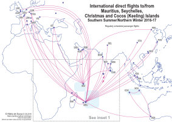
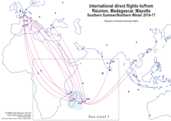
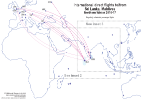
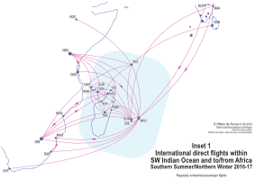
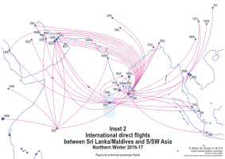
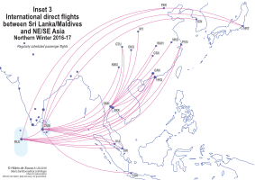

Unfortunately, this page is unlikely to be updated.
Indian Ocean international passenger flight route maps
'Indian Ocean' here referrs to islands in the Indian Ocean that are 'far enough' away from the rim of the ocean. 'International' refers only to the fact that you have to go through immigration and customs at some point for these flights. All regularly-scheduled international passenger direct flights to/from the airports in this region – during Northern Winter/Southern Summer 2016-2017 – are shown in this map. (Details will be checked again as late 2016 approaches.) There are 19 airports with international flights in the region during this period; they are shown as stars on the map. Destinations outside the region are shown as circles.
International direct flights to/from Mauritius, Seychelles, Christmas and Cocos (Keeling) Islands in Southern Summer 2016–2017International direct flights to/from Réunion, Madagascar, Mayotte in Southern Summer 2016–2017International direct flights to/from Sri Lanka, Maldives in Northern Winter 2016–2017Inset 1: International direct flights within SW Indian Ocean and to/from Africa in Southern Summer 2016–2017Inset 2: International direct flights between Sri Lanka/Maldives and S/SW Asia in Northern Winter 2016–2017Inset 3: International direct flights between Sri Lanka/Maldives and NE/SE Asia in Northern Winter 2016-2017
In the southwest, Comoros, Madagascar, Mauritius, Mayotte, Réunion, and Seychelles have banded together to form the Vanilla Islands tourism brand. (Maldives has dropped off from their website around late July/early August 2016.)
Compiling these maps for the Indian Ocean has been more difficult than for the Pacific Ocean, for a number of reasons. The first reason is that the Indian Ocean Islands are much less remote than the Pacific Islands. The Indian Ocean Islands also have a wider and more-diverse 'visitor catchment' than the Pacific Islands. The flight route networks are more complex. I initially envisaged drawing three maps for this region; I ended up having to draw six, due to the complexity. The second reason, related to the first, is that due to the larger number of tourists, the seasonal-fluctuation in the number of flights and routes are more noticable in the Indian Ocean than in the Pacific Ocean. Routes of the airlines based in the region are not as consistent over the years, as the pattern of buisness and tourism movement changes more rapidly, given that the Indian Ocean islands see a more diverse pool of visitors than the Pacific islands. I have less confidence in the accuracy of the information presented here for the Indian Ocean than that in the Pacific Ocean page.
Not shown in these maps are charter flights and seasonal flights in other seasons. This region sees a lot of tourism-oriented charter flights, many of them longhaul from Europe and East Asia. Some of the more interesting 'non-regular' flights are Saint-Pierre ZSE in Réunion to Rodriges RRG in Mauritius, and Christmas Island XCH to Jakarta CDG.
International airports
The following are the 19 airports with regular international flights in the region during this season, plus some other names associated with them. (The datalist below work best with Firefox; you can otherwise do a text-search (cltr+F/⌘+F) on the following texts.)
Type place name in this box:
Mauritius MRU (FIMP, Sir Seewoosagur Ramgoolam, Port Louis)
Saint-Denis RUN (FMEE, Roland Garros, Gillot, Sainte-Marie, Réunion, France)
The following are the airlines and routes involved (Note that airlines do not necessarily have rights to sell tickets for sectors flown entirely outside of their own countries.) (The datalist below work best with Firefox; you can otherwise do a text-search (cltr+F/⌘+F) on the following texts.):
Christmas Island XCH – Cocos (Keeling) Islands CCK
(Six flight numbers, operated as two triangular flights departing from Perth PER each week, once in each direction. Passengers travelling between Australia and Christmas Island or Cocos (Keeling) Islands pass through immigration and customs in Australia, similar to how Australia treats Norfolk Island.)
Domestic airlines
Some more additional information that is not shown in the map. The following are the airlines with domestic passenger flights that I know of.
Some other interesting destinations in the Indian Ocean reachable by regular domestic flights are Socotra (but, the war in Yeman), Lakshadweep (permit required), and Andamans (premit required for non-Indians). Some further reading.